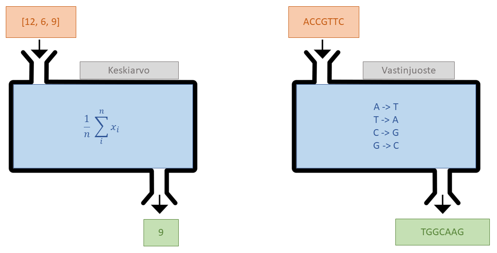
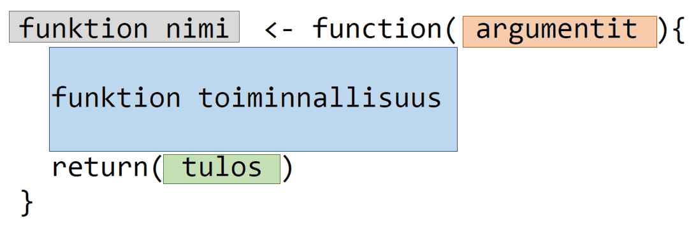
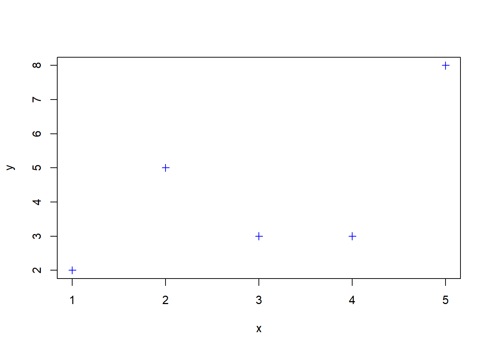
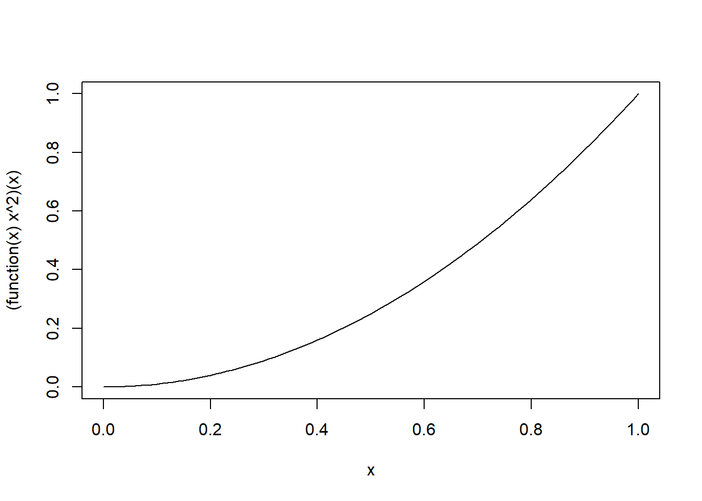

# Define function name and arguments
bmi <- function(height, mass) {
# Compute BMI
value <- mass / height^2
rounded <- round(value, digits = 1)
# Return computed value
return(rounded)
}11 Funktiot
Tässä kappaleessa tutustutaan omien funktioiden kirjoittamiseen ja pureudutaan sitä kautta syvemmälle R-funktioiden toimintaan.
11.1 Funktion käsite
Funktio on nimetty kokonaisuus järjesteltyä ja uudelleenkäytettävää koodia, jonka tarkoitus on suorittaa yksi tarkkaan määrätty tehtävä. Funktioilla on syöte (input) ja tulos (output). Funktion tehtävä on palauttaa (return) syötteen perusteella laskettu tulos. Alla olevassa kuvassa näkyvät funktion neljä osaa: nimi, syöte, toiminnallisuus ja tulos.

Otetaan esimerkiksi kaksi funktiota: “Keskiarvo” ottaa syötteenä halutun määrän lukuja, ja laskee niiden keskiarvon. “Vastinjuoste” ottaa syötteenä DNA-juosteen ja palauttaa sen vastinjuosteen.

Funktioilla voi olla myös erityyppisiä syötteitä. Voitaisiin esimerkiksi määritellä funktio, jolle annettaisiin syötteenä henkilön ikä, pituus, paino, sekä elintapatietoja, ja funktio laskisi näiden pohjalta eliniänodotteen. Yksittäisestä funktion syötteestä käytetään tavallisesti nimitystä “argumentti”.
11.2 R-funktiot
11.2.1 Funktioiden määrittely
Tähän mennessä olemme jo käyttäneet monia R-funktioita, eikä meidän ole tarvinnut miettiä niiden toimintaa kovin syvällisesti. Mahdolliset virhetilanteet on kuitenkin paljon helpompi ratkaista, kun ymmärtää miten funktiot toimivat R:ssä.
R-funktioita luodaan function-komennolla. Funktion luominen näyttää tältä:

R-funktiot siis koostuvat samoista osista kuin yllä esitellyt funktiot:
- Funktion nimi nimeää muuttujan, johon funktio tallennetaan.
- Funktion syöte koostuu argumenteista (funktio voi olla myös argumentiton).
- Funktion toiminnallisuus on R-koodia.
- Funktion tulos palautetaan komennolla
return.
Tehdään esimerkiksi funktio BMI:n laskemiseen:
Ensimmäisellä rivillä määritellään muuttuja, johon funktio tallennetaan, eli funktion nimi bmi. Lisäksi määritetään funktion argumentit, tässä tapauksessa height ja mass. Itse funktion koodi tulee aaltosulkeiden sisään seuraaville riveille. Ensimmäinen koodirivi laskee BMI:n ja toinen pyöristää tuloksen yhden desimaalin tarkkuuteen. Kolmas rivi palauttaa sen.
Voimme nyt kutsua (call) funktiotamme aivan kuin muitakin R-funktioita:
# Example
my_bmi <- bmi(height = 1.79, mass = 74)
my_bmi[1] 23.1HUOM: palautettava arvo on ainoa asia, joka välittyy funktion ulkopuolelle. Koska funktiomme palauttaa pyöristetyn arvon, alkuperäiseen arvoon ei pääse funktion ulkopuolelta käsiksi.
my_bmi <- bmi(height = 1.90, mass = 95)
# Throws error
valueFunktioiden sisällä luodut muuttujat ovat siis olemassa vain sen sisällä ja lakkaavat olemasta, kun funktion suoritus lakkaa.
11.2.2 Argumentit ja funktion kutsuminen
R:ssä funktioiden argumentteja voi määritellä eri tavoilla, mutta yleisimmässä tapauksessa funktiolla on tietty määrä nimettyjä argumentteja. Edellisen esimerkin bmi-funktiolla on kaksi argumenttia, height ja mass. R-kunktioita voi kutsua monella eri tavalla, ja tutustutaan tähän lisää tämän yksinkertaisen funktion avulla.
Yksi tapa on kutsua funktiota antamalla argumenttien arvot ilman niiden nimiä. HUOM: jos argumentteja ei nimeä, niiden tulee olla oikeassa järjestyksessä. Alla olevan esimerkin toisessa kohdassa argumentit menevät sekaisin.
# Call without argument names
bmi(1.65, 62)[1] 22.8# Arguments in wrong order -> weird results / error
bmi(62, 1.65)[1] 0Argumentit voi myös nimetä, kuten edellisissä esimerkeissä tehtiin. Tällöin järjestyksellä ei ole väliä, koska funktiolle on selvää, mitä argumenttia tarkoitetaan.
bmi(height = 1.65, mass = 62)[1] 22.8bmi(mass = 62, height = 1.65)[1] 22.8On myös mahdollista nimetä vain osa argumenteista. Tällöin nimeämättömät argumentit asetetaan argumenteiksi “tyhjiin kohtiin” vasemmalta oikealle.
bmi(1.65, mass = 62)[1] 22.8bmi(62, height = 1.65)[1] 22.8Jos funktioille yritetään antaa argumentteja, joita ei ole määritelty, seuraa virhe:
# Causes error
bmi(height = 1.65, weight = 62)Error in bmi(height = 1.65, weight = 62): unused argument (weight = 62)Samoin jos jokin argumentti puuttuu, seuraa virhe:
# Causes error
bmi(height = 1.65)Error in bmi(height = 1.65): argument "mass" is missing, with no defaultHUOM: vaikka argumentit saa antaa haluamassaan järjestyksessä ja nimettynä tai nimeämättömänä, kannattaa kuitenkin olla johdonmukainen. Yleisohjeena argumentit kannattaa aina nimetä ja pyrkiä antamaan siinä järjestyksessä, kuin ne on funktiossa määritelty. Näin koodin lukeminen ja ylläpito on paljon helpompaa. Poikkeuksena sääntöön ovat funktiot, joiden toiminta on yksinkertaista, tai joiden ensimmäiset argumentit ovat niin tunnettuja, että niitä ei ole syytä nimetä.
Otetaan esimerkiksi funktio seq. Jos avaat funktion help-sivun komennolla ?seq, näet, että ensimmäiset argumentit ovat nimeltään from ja to. Koska seq on hyvin yleinen ja tunnettu, sitä kutsutaan yleensä niin, että from ja to jätetään nimeämättä. Muut argumentit, kuten by ja length.out yleensä nimetään, koska niitä ei aina käytetä, eikä voida olettaa koodin lukijan muistavan, mitä argumenttia tarkoitetaan, vaikka seq toimisi ilman nimiä, jos annettaisiin peräkkäin from, to ja by. Vastaavasti plot-komennon tapauksessa ei aina kirjoiteta nimiä x ja y-argumenteille, mutta väriä yms. ohjaavat argumentit nimetään.
11.2.2.1 Oletusarvot (default values)
Monilla R-funktioilla on paljon argumentteja, joista kaikkia ei kuitenkaan tarvitse määrittää erikseen, vaan niillä on oletusarvoja (default values). Esimerkiksi seq tekee oletuksena vektorin, joka sisältää kaikki kokonaisluvut from-argumentista to-argumenttiin. Tätä käyttäytymistä voi kuitenkin muuttaa by- ja length.out-argumentteja säätämällä.
Tehdään nyt omaan bmi-funktioomme uusi argumentti height_multiplier, joka saa oletuksena arvon 1. Jos halutaan antaa pituus senttimetreissä metrien sijaan, voidaan asettaa pituuden kertoimeksi 0.01.
bmi <- function(height, mass, height_multiplier = 1) {
# Compute BMI
value <- mass / (height * height_multiplier)^2
rounded <- round(value, digits = 1)
# Return computed value
return(rounded)
}
bmi(height = 1.65, mass = 62)[1] 22.8bmi(height = 165, mass = 62, height_multiplier = 0.01)[1] 22.8Argumentin oletusarvo merkataan siis funktion määrittelyssä =-merkillä, kuten funktion argumenttien anto yleensä. Monilla valmiiden funktioiden argumenteilla on oletusarvona tyhjä arvo eli NULL. Tämä tarkoittaa usein, että argumentin voi jättää tyhjäksi, mutta oletusarvon valinta on niin monimutkainen prosessi, että sitä ei voi kirjoittaa funktion määrittelyssä yhdelle riville. Usein tämä tarkoittaa sitä, että oletusarvo riippuu muista argumenteista. HUOM: NULL on eri asia kuin NA, ja käyttäytyy eri tavoin. Aiheesta lisää täällä.
11.2.3 Funktio ilman argumentteja
Joillain funktioilla ei ole ollenkaan argumentteja. Esimerkiksi R:n sisäiset funktiot Sys.time ja Sys.Date palauttavat tämänhetkisen ajan ja päivämäärän, eivätkä tarvitse argumentteja.
Sys.time()[1] "2024-06-18 16:13:39 EEST"Itse tehdyt funktiot voivat myös toimia ilman argumentteja. Niitä käytetään usein R-istunnon tilan, koodia ajavan tietokoneen ominaisuuksien tai ajan selvittämiseen. Tämä melko hyödytön esimerkkifunktio palauttaa tämän dokumentin kirjoittajan nimen:
author <- function() {
return("Anton Klåvus")
}
author()[1] "Anton Klåvus"11.2.4 Palautus (return)
Tutkitaan return-käskyä, eli palautusta R-funktiosta hieman tarkemmin.
11.2.5 Usean arvon palautus
R-funktiot palauttavat aina yhden objektin. Palautukseen käytetään funktiota return, kuten aiemmin on nähty. Jos funktiosta halutaan ulos useampi objekti, on muodostettava esimerkiksi lista, joka sisältää halutut objektit. Jos siis bmi-funktiosta haluttaisiin palauttaa sekä pyöristetty, että alkuperäinen BMI:n arvo, voidaan ne palauttaa listassa:
bmi_list <- function(height, mass, height_multiplier = 1) {
# Compute BMI
value <- mass / (height * height_multiplier)^2
rounded <- round(value, digits = 1)
# Return computed value
values <- list(original = value,
rounded = rounded)
return(values)
}
result <- bmi_list(1.65, 62)
result$original
[1] 22.77319
$rounded
[1] 22.8result$rounded[1] 22.811.2.6 Palautus ilman return-käskyä
R on siitä erikoinen ohjelmointikieli, että R-funktiot voivat palauttaa arvoja myös ilman eksplisiittistä return-käskyä. Jos R-funktiossa ei ole return-käskyä, ja viimeinen rivi on vain muuttuja, tai sijoitus muuttujaan, tämän muuttujan arvo palautetaan automaattisesti. bmi-funktion voisi siis kirjoittaa myös näin:
bmi <- function(height, mass, height_multiplier = 1) {
# Compute BMI
value <- mass / (height * height_multiplier)^2
rounded <- round(value, digits = 1)
# Return computed value
rounded
}
bmi(1.65, 62)[1] 22.8Alussa on kuitenkin hyvä käyttää return-käskyä, niin pysyy paremmin perässä siitä, mitä koodi tekee, eikä sen kirjoittaminen ole kokeneellekaan ohjelmoijalle huono tapa.
11.2.7 Funktio ilman tulosta
Funktion tarkoitus ei ole aina palauttaa jotain. Yleisiä esimerkkejä ovat cat ja plot, jotka tulostavat ja piirtävät asioita. Jos näiden funktion paluuarvon yrittää sijoittaa muuttujaan, on tuloksena NULL, eli tyhjä arvo.
cat_return <- cat("What does cat return?\n")What does cat return?cat_returnNULLItse tehty funktio palauttaa NULL, jos viimeinen komento palauttaa NULL:
# Function for plotting blue squares
blue_squares <- function(x, y) {
plot(x, y, pch = 3, col = "blue")
}
value <- blue_squares(1:5, c(2, 5, 3, 3, 8))
valueNULL11.2.8 Funktion lyhytmuoto
Yksinkertaisten (tyypillisesti yhden rivin) funktioiden tapauksessa aaltosulkuja ei ole pakollista käyttää funktion koodin rajaamiseen. Tarkastellaan esimerkkifunktiota, joka laskee puuttuvien havaintojen NA määrän vektorista x.
count_missing <- function(x) {
mis <- is.na(x)
count <- sum(mis)
return(count)
}Purkamalla välivaiheet auki ja jättämällä return-käsky pois, voitaisiin funktio kirjoittaa lyhytmuodossa seuraavasti:
count_missing <- function(x) sum(is.na(x))11.2.9 Anonyymi funktio
Jos funktiota tarvitaan vain yksittäiseen laskutoimitukseen, voidaan se määritellä myös ilman muuttujaa, johon funktio tallennettaisiin. Tällöin kyse on ns. anonyymistä funktiosta (inline function, anonymous function, lambda function). Anonyymi funktio määritellään kirjoittamalla \(x) jonka perään kirjoitetaan funktion lauseke, esim. funktio joka laskee vektorin x neliöt voitaisiin kirjoittaa muodossa
\(x) x^2ja sitä voidaan käyttää kuten muitakin funktioita
(\(x) x^2)(3)[1] 9curve((\(x) x^2)(x))
Anonyymeillä funktioilla voi myös olla useampi argumentti
(\(x, y) x + y)(3, 4)[1] 7Huom! Anonyymit funktiot vaativat R-version 4.1 tai sitä uudemman.